# devtools::install_github("derekmichaelwright/dblogr")
library(dblogr) # Loads: tidyverse, ggpubr, ggbeeswarm, ggrepel
library(ggpmisc) # stat_poly_eq()The correlation coefficient (R2), which indicates the proportion of variation explained by an independant variable or model, can be calculated in more than one way. The goal of this vignette is to help clear up this confusion, with a few different examples.
d1
Entry: 1 Lentil GenotypeExpt: 18 Site-yearsMacroEnv: 3 MacroenvironmentsRep: 1-3 Reps per site-yearT_mean: Mean temperatureP_mean: Mean photoperiodDTF: Days from sowing to flowerDTM: Days from sowing to swollen podDTM: Days from sowing to maturityRDTF: Rate of progress towards fowering# Prep data
d1 <- read.csv("Data_1.csv") %>%
mutate(RDTF = 1 / DTF) # Rate of progress towards fowering
# Preview data
knitr::kable(d1[c(1:3,31:33,49:51),])| Entry | Expt | MacroEnv | Rep | T_mean | P_mean | DTF | DTS | DTM | RDTF | |
|---|---|---|---|---|---|---|---|---|---|---|
| 1 | 33 | Ro16 | Macroenvironment 1 | 1 | 17.2 | 16.2 | 45 | 62 | 96 | 0.0222222 |
| 2 | 33 | Ro16 | Macroenvironment 1 | 2 | 17.2 | 16.2 | 44 | 64 | 96 | 0.0227273 |
| 3 | 33 | Ro16 | Macroenvironment 1 | 3 | 17.2 | 16.2 | 44 | 61 | 92 | 0.0227273 |
| 31 | 33 | Ne16 | Macroenvironment 2 | 1 | 19.2 | 11.0 | 81 | NA | NA | 0.0123457 |
| 32 | 33 | Ne16 | Macroenvironment 2 | 2 | 19.2 | 11.0 | 77 | 111 | 124 | 0.0129870 |
| 33 | 33 | Ne16 | Macroenvironment 2 | 3 | 19.2 | 11.0 | 82 | 106 | 121 | 0.0121951 |
| 49 | 33 | It16 | Macroenvironment 3 | 1 | 10.6 | 10.8 | 114 | 130 | 164 | 0.0087719 |
| 50 | 33 | It16 | Macroenvironment 3 | 2 | 10.6 | 10.8 | 114 | 133 | 175 | 0.0087719 |
| 51 | 33 | It16 | Macroenvironment 3 | 3 | 10.6 | 10.8 | 120 | 145 | 168 | 0.0083333 |
The most obvious correlation is that of two traits. For example, since DTF, DTS, and DTM are all phenology traits, we can assume they will be highly correlated. Lets plot this out and see how it looks.
# Remove any rows with missing data
d1 <- d1 %>% filter(!is.na(DTF), !is.na(DTS), !is.na(DTM))
# DTF - DTS
mp1 <- ggplot(d1, aes(x = DTF, y = DTS)) +
geom_smooth(method = "lm", se = F, color = "red") +
geom_point(aes(fill = MacroEnv), size = 3, pch = 21, alpha = 0.7) +
scale_fill_manual(name = NULL, values = c("darkgreen","darkorange","darkblue")) +
stat_poly_eq(aes(label = paste(..eq.label.., ..rr.label.., sep = "*\",\"~~")),
formula = y ~ x, parse = T, rr.digits = 3) +
theme_dblogr(legend.position = "top") +
labs(x = "Days to Flower", y = "Days to Swollen Pods")
# DTS - DTM
mp2 <- ggplot(d1, aes(x = DTS, y = DTM)) +
geom_smooth(method = "lm", se = F, color = "red") +
geom_point(aes(fill = MacroEnv), size = 3, pch = 21, alpha = 0.7) +
scale_fill_manual(name = NULL, values = c("darkgreen","darkorange","darkblue")) +
stat_poly_eq(aes(label = paste(..eq.label.., ..rr.label.., sep = "*\",\"~~")),
formula = y ~ x, parse = T, rr.digits = 3) +
theme_dblogr(legend.position = "top") +
labs(x = "Days to Swollen Pods", y = "Days to Maturity")
# DTF - DTM
mp3 <- ggplot(d1, aes(x = DTF, y = DTM)) +
geom_smooth(method = "lm", se = F, color = "red") +
geom_point(aes(fill = MacroEnv), size = 3, pch = 21, alpha = 0.7) +
scale_fill_manual(name = NULL, values = c("darkgreen","darkorange","darkblue")) +
stat_poly_eq(aes(label = paste(..eq.label.., ..rr.label.., sep = "*\",\"~~")),
formula = y ~ x, parse = T, rr.digits = 3) +
theme_dblogr(legend.position = "top") +
labs(x = "Days to Flower", y = "Days to Maturity",
caption = "\xa9 www.dblogr.com/ | Data: AGILE")
# Append and Save
mp <- ggarrange(mp1, mp2, mp3, nrow = 1, common.legend = T, align = "h")
ggsave("corr_coef_01.png", mp, width = 10, height = 4)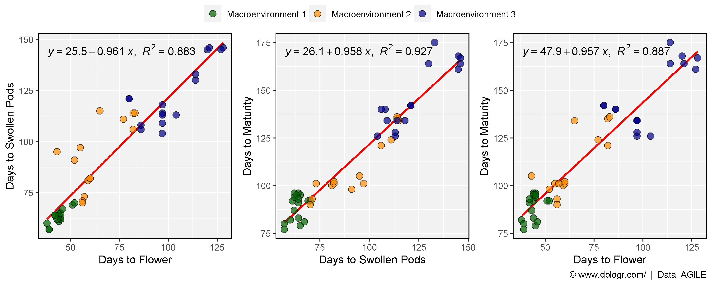
Interpretations:
DTS is explained by DTF.DTM is explained by DTS.DTM is explained by DTF.R2 can be calculated using the cor function which has method = "pearson" as the default.
cor(x = d1$DTF, y = d1$DTS, method = "pearson")^2## [1] 0.8833893cor(x = d1$DTS, y = d1$DTM, method = "pearson")^2## [1] 0.9272951cor(x = d1$DTF, y = d1$DTM, method = "pearson")^2## [1] 0.8868398R2 can also be manually calculated using the following formula to calculate Pearson’s r:
\(r=\frac{n\sum xy - (\sum x)(\sum y)}{\sqrt{(n\sum x^2 - (\sum x)^2)(n\sum y^2 - (\sum y)^2)}}\)
where:
and
\(R^2=r^2\)
Now lets manually create a function to calculate R2 using Pearson’s r.
pearsonsR2 <- function(x, y) {
n <- length(x)
r_numerator <- n * sum(x*y) - sum(x) * sum(y)
r_denominator <- sqrt( (n * sum(x^2) - sum(x)^2) * (n * sum(y^2) - sum(y)^2) )
r <- r_numerator / r_denominator
r^2
}
pearsonsR2(x = d1$DTF, y = d1$DTS)## [1] 0.8833893pearsonsR2(x = d1$DTS, y = d1$DTM)## [1] 0.9272951pearsonsR2(x = d1$DTF, y = d1$DTM)## [1] 0.8868398Switching the x and y variables gives the same result.
pearsonsR2(x = d1$DTM, y = d1$DTF)## [1] 0.8868398cor(x = d1$DTM, y = d1$DTF, method = "pearson")^2## [1] 0.8868398Note that the stat_poly_eq function included the option formula = y ~ x, which creates a linear regression of the x and y variables. Our R2 is a measure how how well the DTM data matches the predictions of DTM based on our DTF data and linear regression model.
# Perform linear regression
myModel <- lm(DTM ~ DTF, data = d1)
summary(myModel)##
## Call:
## lm(formula = DTM ~ DTF, data = d1)
##
## Residuals:
## Min 1Q Median 3Q Max
## -21.443 -6.744 -1.465 5.132 23.879
##
## Coefficients:
## Estimate Std. Error t value Pr(>|t|)
## (Intercept) 47.91678 3.82211 12.54 2.78e-16 ***
## DTF 0.95699 0.05096 18.78 < 2e-16 ***
## ---
## Signif. codes: 0 '***' 0.001 '**' 0.01 '*' 0.05 '.' 0.1 ' ' 1
##
## Residual standard error: 9.601 on 45 degrees of freedom
## Multiple R-squared: 0.8868, Adjusted R-squared: 0.8843
## F-statistic: 352.7 on 1 and 45 DF, p-value: < 2.2e-16summary(myModel)$r.squared## [1] 0.8868398# Get predicted values and residual values from model
d1 <- d1 %>% mutate(Predicted_DTM = predict(myModel),
Residuals_DTM = residuals(myModel) )We can also calculate R2 by replacing DTF with with the Predicted_DTM values from our linear regression model.
pearsonsR2(x = d1$Predicted_DTM, y = d1$DTM)## [1] 0.8868398Again, switching the x and y variables gives the same result.
pearsonsR2(x = d1$DTM, y = d1$Predicted_DTM)## [1] 0.8868398If you have Observed and Predicted values, R2 can also be calculated using the Sum of Squares formula:
\(R^2=1-\frac{SS_{residuals}}{SS_{total}}=1-\frac{\sum (o-p)^2}{\sum (o-\bar{o})^2}\)
where:
Now lets manually create a function to calculate R2 using the Sum of Squares.
SumOfSquaresR2 <- function(o, p) { 1 - ( sum((o - p)^2) / sum((o - mean(o))^2) ) }Create a plot to visualize the Total Sum of Squares and Residual Sum of Squares
# Prep data
xx <- d1 %>% filter(Expt %in% c("Ro17","Ne17","Sp17","It17"), Rep == 2)
# Total Sum of Squares Plot
mp1 <- ggplot(xx, aes(x = DTF, y = DTM)) +
geom_text(x = 40, y = 120, size = 5, label = expression(italic(bar("y"))), parse = T) +
geom_rect(alpha = 0.3, fill = "coral", color = alpha("black",0.5),
aes(xmin = DTF, xmax = DTF + (mean(d1$DTM, na.rm = T) - DTM),
ymin = DTM, ymax = mean(d1$DTM, na.rm = T))) +
geom_hline(yintercept = mean(d1$DTM, na.rm = T), color = "coral") +
geom_point(size = 2, ) +
geom_point(data = d1,alpha = 0.3) +
theme_dblogr() +
labs(title = "(a) Total Sum of Squares")
# Residual Sum of Squares Plot
mp2 <- ggplot(xx, aes(x = DTF, y = DTM)) +
geom_text(x = 70, y = 120, size = 5, label = expression(italic("f")), parse = T) +
geom_rect(alpha = 0.3, fill = "darkorchid", color = alpha("black",0.5),
aes(xmin = DTF, xmax = DTF - Residuals_DTM,
ymin = DTM, ymax = Predicted_DTM)) +
geom_smooth(data = d1, method = "lm", se = F, color = "darkorchid") +
geom_point(size = 2) +
geom_point(data = d1, alpha = 0.3) +
theme_dblogr() +
labs(title = "(b) Residual Sum of Squares",
caption = "\xa9 www.dblogr.com/ | Data: AGILE")
# Appened
mp <- ggarrange(mp1, mp2, ncol = 2, align = "h")
ggsave("corr_coef_02.png", mp, width = 8, height = 4)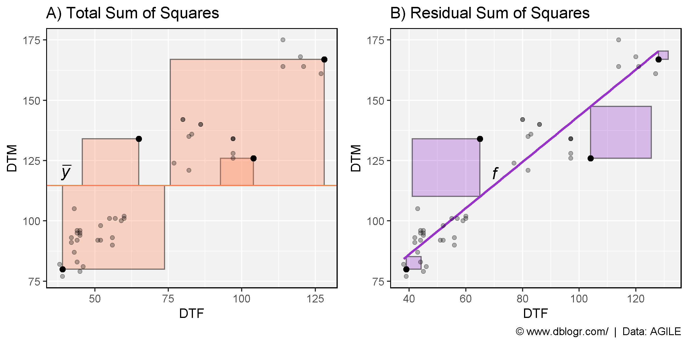
In this case:
DTMPredicted_DTMmean(DTM, na.rm = T)Now lets calculate R2 using the Sum of Squares formula.
SumOfSquaresR2(o = d1$DTM, p = d1$Predicted_DTM)## [1] 0.8868398Now, Swaping the x and y variables results in different values. Why?
SumOfSquaresR2(p = d1$DTM, o = d1$Predicted_DTM)## [1] 0.8724006It is important to set DTM as the observed variable and Predicted_DTM as the predicted variable. This is becuase with the sum of squares model, our trendline has a slope = 1 and intercept = 0 (geom_abline), which is matched by lm(DTM~Predicted_DTM) but not lm(Predicted_DTM~DTM).
# Intercept = 0, Slope = 1
round(lm(DTM ~ Predicted_DTM, data = d1)$coefficients, 3)## (Intercept) Predicted_DTM
## 0 1# Intercept != 0, Slope != 1
round(lm(Predicted_DTM ~ DTM, data = d1)$coefficients, 3)## (Intercept) DTM
## 12.980 0.887This can be visualized by showing how the trendline (geom_smooth(method = "lm")) devaites from the 1:1 line (geom_abline()).
mymin <- min(c(d1$DTM, d1$Predicted_DTM))
mymax <- max(c(d1$DTM, d1$Predicted_DTM))
mp1 <- ggplot(d1, aes(y = DTM, x = Predicted_DTM)) +
geom_smooth(method = "lm", se = F, size = 2, color = "red") +
geom_abline(color = "blue") +
geom_point(aes(fill = MacroEnv), size = 3, pch = 21, alpha = 0.7) +
scale_fill_manual(values = c("darkgreen","darkorange","darkblue")) +
xlim(c(mymin, mymax)) + ylim(c(mymin, mymax)) +
theme_dblogr()
mp2 <- ggplot(d1, aes(x = DTM, y = Predicted_DTM)) +
geom_smooth(method = "lm", formula = y ~ x, se = F, size = 2, color = "red") +
geom_abline(color = "blue") +
geom_point(aes(fill = MacroEnv), size = 3, pch = 21, alpha = 0.7) +
scale_fill_manual(values = c("darkgreen","darkorange","darkblue")) +
xlim(c(mymin, mymax)) + ylim(c(mymin, mymax)) +
theme_dblogr() +
labs(caption = "\xa9 www.dblogr.com/ | Data: AGILE")
mp <- ggarrange(mp1, mp2, ncol = 2, legend = "none", align = "h")
ggsave("corr_coef_03.png", mp, width = 8, height = 4)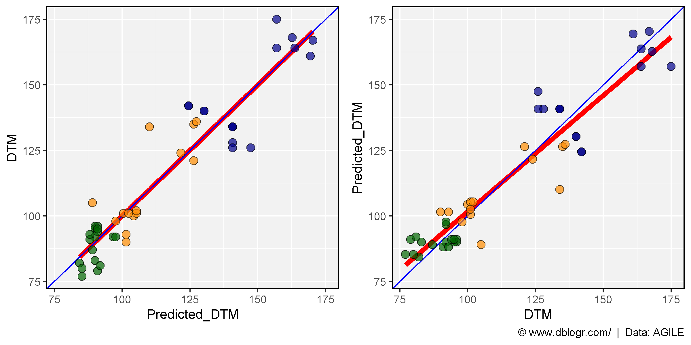
Why is this important? Improper usage can lead to inncorrect interpretations. The example above involved inncorrectly calculating R2 by swapping our observed and predicted variables within the Sum of Squares (SS) formula. Another example would be using the Sum of Squares formula without predictions vs. observations. E.g., if we calculate R2 using our SumOfSquaresR2 function with DTF vs DTM.
SumOfSquaresR2(o = d1$DTF, p = d1$DTM)## [1] -1.789874mymin <- min(d1$DTF)
mymax <- max(d1$DTM)
mp1 <- ggplot(d1, aes(x = DTF, y = DTM)) +
geom_abline(color = "blue") +
geom_smooth(method = "lm", se = F, color = "red") +
geom_segment(aes(xend = DTF, yend = Predicted_DTM)) +
geom_point(aes(fill = MacroEnv), size = 3, pch = 21, alpha = 0.7) +
scale_fill_manual(values = c("darkgreen","darkorange","darkblue")) +
xlim(c(mymin, mymax)) + ylim(c(mymin, mymax)) +
theme_dblogr() +
labs(title = substitute(paste("A) ", italic("Pearson's R")^2, " = ", r2),
list(r2 = round(pearsonsR2(x = d1$DTF, y = d1$DTM), 3))))
mp2 <- ggplot(d1, aes(x = DTF, y = DTM)) +
geom_abline(color = "blue") +
geom_smooth(method = "lm", se = F, color = "red") +
geom_segment(aes(xend = DTF, yend = DTF)) +
geom_point(aes(fill = MacroEnv), size = 3, pch = 21, alpha = 0.7) +
scale_fill_manual(values = c("darkgreen","darkorange","darkblue")) +
xlim(c(mymin, mymax)) + ylim(c(mymin, mymax)) +
theme_dblogr() +
labs(title = substitute(paste("B) ", italic("Sum of Squares R")^2, " = ", r2),
list(r2 = round(SumOfSquaresR2(o = d1$DTF, p = d1$DTM), 3))),
caption = "\xa9 www.dblogr.com/ | Data: AGILE")
mp <- ggarrange(mp1, mp2, nrow= 1, ncol = 2, legend = "none", align = "h")
ggsave("corr_coef_04.png", mp, width = 8, height = 4)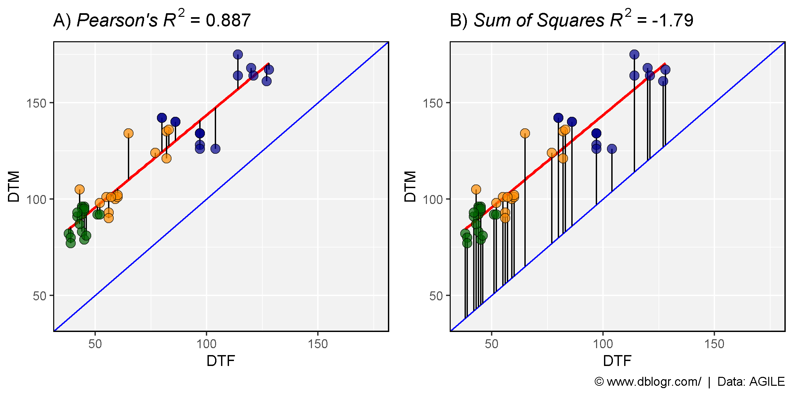
However, the more common mistake happens when the Pearson’s formula is used for evaluating the accuracy of a model used to predict values.
d2
Entry: 324 GenotypesExpt: 3 Site-yearsMacroEnv: 3 MacroenvironmentsDTF: Days from sowing to flowerPredicted_DTF: Predicted values of DTF# Prep data
d2 <- read.csv("Data_2.csv") %>%
mutate(Expt = factor(Expt, levels = c("Su16", "Ne16", "It16")))
# Preview data
knitr::kable(d2[c(1:3,478:480,970:972),])| Entry | Expt | MacroEnv | DTF | Predicted_DTF | |
|---|---|---|---|---|---|
| 1 | 1 | Su16 | Macroenvironment 1 | 53.66667 | 51.58706 |
| 2 | 1 | Ne16 | Macroenvironment 2 | 123.00000 | 97.99714 |
| 3 | 1 | It16 | Macroenvironment 3 | 136.66667 | 145.02877 |
| 478 | 160 | Su16 | Macroenvironment 1 | 53.33333 | 50.77359 |
| 479 | 160 | Ne16 | Macroenvironment 2 | 125.00000 | 100.79214 |
| 480 | 160 | It16 | Macroenvironment 3 | 134.00000 | 136.28517 |
| 970 | 324 | Su16 | Macroenvironment 1 | 50.66667 | 48.10054 |
| 971 | 324 | Ne16 | Macroenvironment 2 | 130.66667 | 98.00611 |
| 972 | 324 | It16 | Macroenvironment 3 | 125.33333 | 129.47559 |
Table 2: Correlation data set #2 (d2).
mymin <- min(c(d2$DTF, d2$Predicted_DTF))
mymax <- max(c(d2$DTF, d2$Predicted_DTF))
mp <- ggplot(d2, aes(x = Predicted_DTF, y = DTF)) +
geom_point(aes(color = MacroEnv), alpha = 0.3) +
geom_abline(color = "blue") +
geom_smooth(method = "lm", se = F, color = "red") +
facet_wrap(Expt~., scales = "free", ncol = 3) +
stat_poly_eq(formula = y ~ x, parse = T, rr.digits = 7) +
scale_color_manual(values = c("darkgreen","darkorange","darkblue")) +
xlim(c(mymin, mymax)) + ylim(c(mymin, mymax)) +
theme_dblogr(legend.position = "none") +
labs(title = expression(paste("Incorrect usage of ", italic("Pearson's R")^2)),
caption = "\xa9 www.dblogr.com/ | Data: AGILE")
ggsave("corr_coef_05.png", mp, width = 8, height = 4)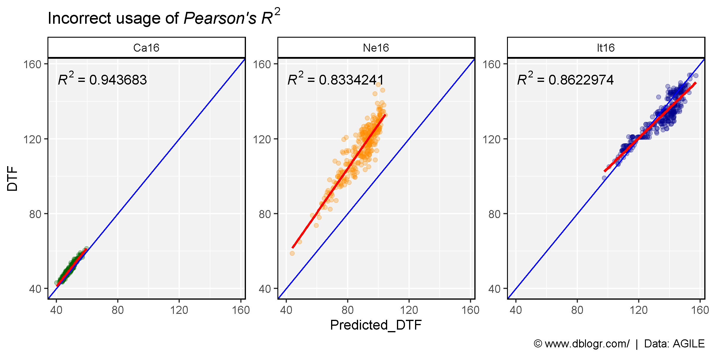
my_ggplot <- function(expt, color) {
# Prep data
xx <- d2 %>% filter(Expt == expt)
xx <- xx %>%
mutate(Trendline = predict(lm(DTF ~ Predicted_DTF, data = xx)))
mymin <- min(c(xx$DTF, xx$Predicted_DTF))
mymax <- max(c(xx$DTF, xx$Predicted_DTF))
# Plot
mp1 <- ggplot(xx, aes(x = Predicted_DTF, y = DTF)) +
geom_segment(aes(xend = Predicted_DTF, yend = Trendline), alpha = 0.2) +
geom_smooth(method = "lm", se = F, color = "red") +
geom_point(color = color, alpha = 0.5) +
geom_abline(color = "blue") +
xlim(c(mymin, mymax)) + ylim(c(mymin, mymax)) +
theme_dblogr() +
labs(title = expt,
subtitle = substitute(paste(italic("Pearson's R")^2, " = ", r2),
list(r2 = round(pearsonsR2(x = xx$DTF, y = xx$Predicted_DTF), 3))))
mp2 <- ggplot(xx, aes(x = Predicted_DTF, y = DTF)) +
geom_segment(aes(xend = Predicted_DTF, yend = Predicted_DTF), alpha = 0.2) +
geom_point(color = color, alpha = 0.5) +
geom_abline(color = "blue") +
stat_poly_eq(formula = y ~ x, parse = T, rr.digits = 7) +
xlim(c(mymin, mymax)) + ylim(c(mymin, mymax)) +
theme_dblogr() +
labs(subtitle = substitute(paste(italic("Sum of Squares R")^2, " = ", r2),
list(r2 = round(SumOfSquaresR2(o = xx$DTF, p = xx$Predicted_DTF), 3))),
caption = "\xa9 www.dblogr.com/ | Data: AGILE")
ggarrange(mp1, mp2, ncol = 2, align = "h")
}mp1 <- my_ggplot("Su16", color = "darkgreen")
mp2 <- my_ggplot("Ne16", color = "darkorange")
mp3 <- my_ggplot("It16", color = "darkblue")
mp <- ggarrange(mp1, mp2, mp3, ncol = 1)
ggsave("corr_coef_06.png", mp, width = 8, height = 10)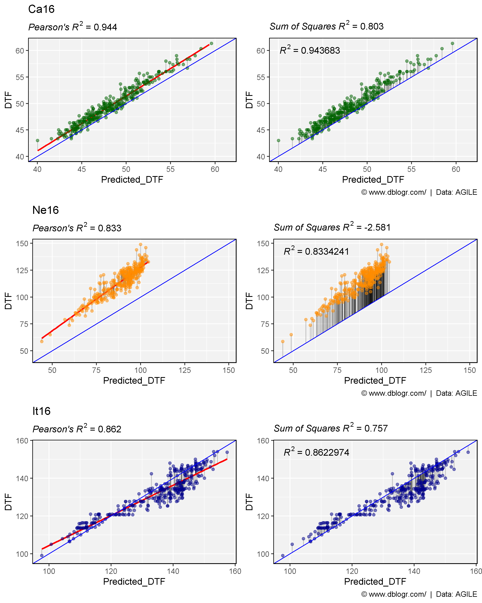
Using Pearson’s formula R2 values will always fall between 0 and 1. However, when using the Sum of Squares formula (which has an intercept of 0), negative values can be aquired.
# Calculate R^2 for Ne17
xx <- d2 %>% filter(Expt == "Ne16")
SumOfSquaresR2(o = xx$DTF, p = xx$Predicted_DTF)## [1] -2.581473R2 for Ne17 is < 0, What does this mean? and how do we interpret it?
R2 = 1 = regression is perfect, no errors
since,
\(R^2=1-\frac{SS_{residuals}}{SS_{total}}=1-\frac{0}{\sum (x-\bar{x})}=1\)
# Calculate R^2 of perfect regression
SumOfSquaresR2(o = xx$DTF, p = xx$DTF)## [1] 1R2 = 0 = regression is no better than using the mean
since,
\(y=\bar{x}\)
and,
\(R^2=1-\frac{SS_{residuals}}{SS_{total}}=1-\frac{\sum (x-\bar{x})}{\sum (x-\bar{x})}=1-1=0\)
# Prep data
xx <- xx %>% mutate(Mean_DTF = mean(DTF))
# Calculate R^2 with mean
SumOfSquaresR2(o = xx$DTF, p = xx$Mean_DTF)## [1] 0R2 < 0 = regression is worse than using the mean.
\(R^2=1-\frac{SS_{residuals}}{SS_{total}}=1-(>1)=(<0)\)
# Calculate the Sum of Squares for the residuals
sum((xx$DTF - xx$Predicted_DTF)^2)## [1] 226005# Calculate the total Sum of Squares
sum((xx$DTF - mean(xx$DTF))^2)## [1] 63103.93\(SS_{residuals} > SS_{total}\)
t1 <- paste("Total Sum of Squares =", round(sum((xx$DTF - mean(xx$DTF))^2)))
t2 <- paste("Residual Sum of Squares =", round(sum((xx$DTF - xx$Predicted_DTF)^2)))
mp1 <- ggplot(xx, aes(x = Predicted_DTF, y = DTF)) +
geom_hline(yintercept = mean(xx$DTF), color = "coral", size = 2) +
geom_segment(aes(xend = Predicted_DTF, yend = Mean_DTF), alpha = 0.2) +
geom_point(alpha = 0.5) +
theme_dblogr() +
labs(title = "Ne16", subtitle = t1)
mp2 <- ggplot(xx, aes(x = Predicted_DTF, y = DTF)) +
geom_abline(color = "darkorchid", size = 2) +
geom_segment(aes(xend = Predicted_DTF, yend = Predicted_DTF), alpha = 0.2) +
geom_point(alpha = 0.5) +
theme_dblogr() +
labs(title = "", subtitle = t2,
caption = "\xa9 www.dblogr.com/ | Data: AGILE")
mp <- ggarrange(mp1, mp2, ncol = 2, align = "h")
ggsave("corr_coef_07.png", mp, width = 8, height = 4)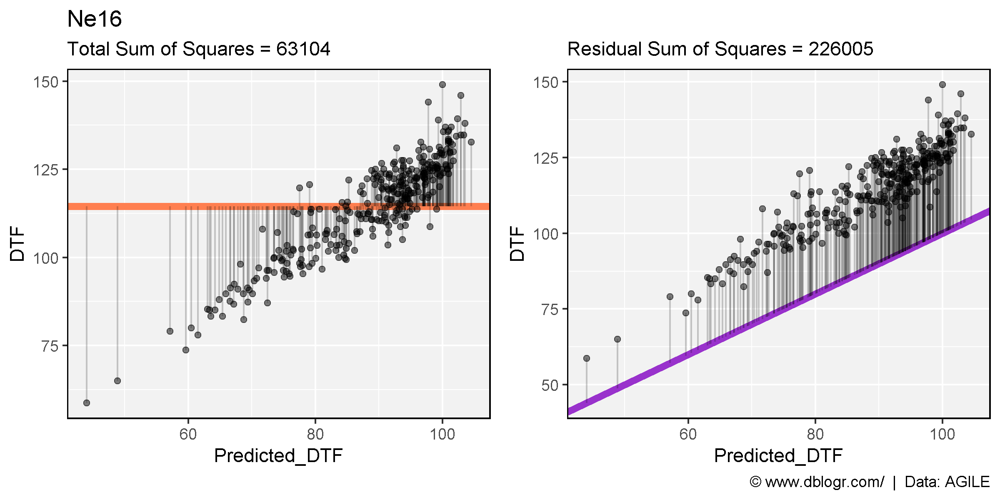
Another factor to keep in mind, when considering R2, is the effect of the range of the data.
x1 <- d1 %>% filter(MacroEnv == "Macroenvironment 1") %>% mutate(Range = "Low")
x2 <- x1 %>% mutate(DTF = DTF + 20, DTM = DTM + 20, Range = "High",
MacroEnv = "Macroenvironment 2")
x3 <- bind_rows(x1, x2) %>% mutate(Range = "Both")
xx <- bind_rows(x1, x2, x3) %>%
mutate(Range = factor(Range, levels = c("Low","High","Both")))
mp <- ggplot(xx, aes(x = DTF, y = DTM)) +
geom_point(aes(color = MacroEnv)) +
geom_smooth(method = "lm", se = F) +
stat_poly_eq(formula = y ~ x, parse = T, rr.digits = 3) +
facet_grid(.~Range) +
theme_dblogr(legend.position = "none") +
labs(caption = "\xa9 www.dblogr.com/ | Data: AGILE")
ggsave("corr_coef_08.png", mp, width = 6, height = 4)ggsave("../../academic_graphs/correlation_coefficients/gallery/gallery/corr_coef_08.png", mp, width = 6, height = 4)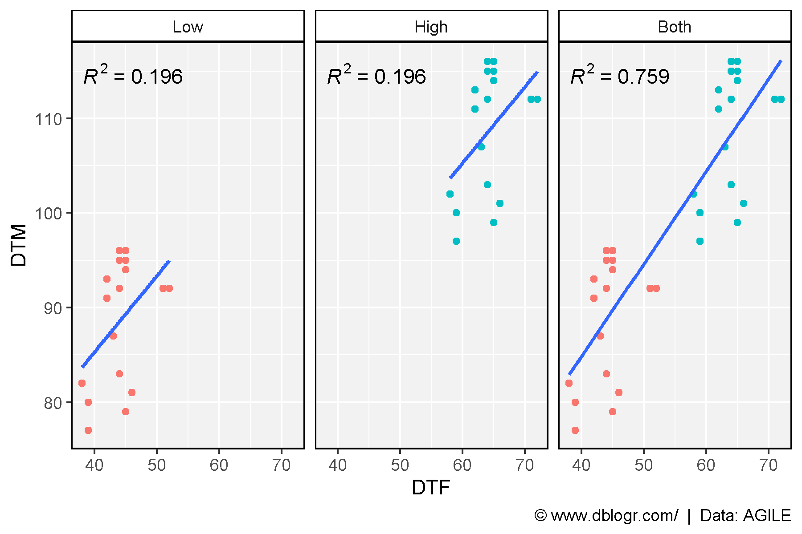
The The Root-Mean-Square Error (RMSE) is a measure of the differences between observed and predicted, or an average deviation of the predicted vs observed values.
\(RMSE=\frac{\sum (o-p^2}{n}\)
# Create RMSE function
modelRMSE <- function(o, p) {
sqrt(sum((o-p)^2) / (length(o)))
}
# Calculate RMSE for Ro17
xx <- d2 %>% filter(Expt == "Su16")
modelRMSE(xx$DTF, xx$Predicted_DTF)## [1] 1.610582# Calculate RMSE for Ne17
xx <- d2 %>% filter(Expt == "Ne16")
modelRMSE(xx$DTF, xx$Predicted_DTF)## [1] 26.4111interpretation: the standard deviation of the unexplained variance in Ro17 is 0.95 and in Ne17 is 24.4.
Note: for easier interpretation, the x and y axis have been swapped, since overpredictions will be above the geom_abline and underpredictions below.
my_ggplot <- function(expts, colors) {
# Prep data
xx <- d2 %>% filter(Expt %in% expts)
r2 <- round(SumOfSquaresR2(o = xx$DTF, p = xx$Predicted_DTF), 3)
rmse <- round(modelRMSE(o = xx$DTF, p = xx$Predicted_DTF), 1)
mymin <- min(c(xx$DTF, xx$Predicted_DTF))
mymax <- max(c(xx$DTF, xx$Predicted_DTF))
# Plot
ggplot(xx, aes(x = DTF, y = Predicted_DTF)) +
geom_point(aes(fill = Expt), pch = 21, size = 2, alpha = 0.7) +
geom_abline(color = "blue") +
ylim(c(mymin, mymax)) +
xlim(c(mymin, mymax)) +
scale_fill_manual(values = colors) +
theme_dblogr(legend.position = "none") +
labs(y = "Predicted DTF", x = "Observed DTF",
title = substitute(
paste(italic("R")^2, " = ", r2, " | ", italic("RMSE"), " = ", rmse),
list(r2 = r2, rmse = rmse)))
}
mp1 <- my_ggplot("Su16", "darkgreen") + facet_grid(.~Expt)
mp2 <- my_ggplot("Ne16", "darkorange") + facet_grid(.~Expt)
mp3 <- my_ggplot("It16", "darkblue") + facet_grid(.~Expt) +
labs(caption = "\xa9 www.dblogr.com/ | Data: AGILE")
mp <- ggarrange(mp1, mp2, mp3, ncol = 3)
ggsave("corr_coef_09.png", mp, width = 10, height = 4)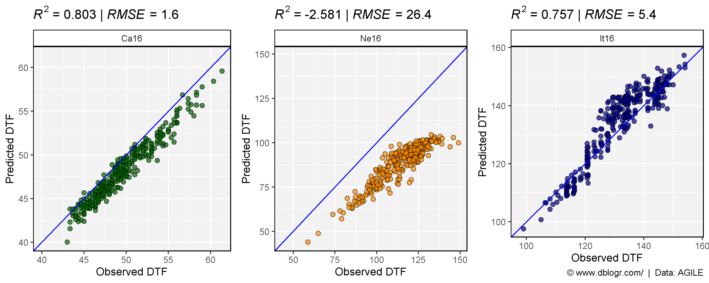
mp <- my_ggplot(c("Su16","Ne16","It16"), c("darkgreen","darkorange","darkblue")) +
theme(legend.position = "bottom")
ggsave("corr_coef_10.png", mp, width = 6, height = 4)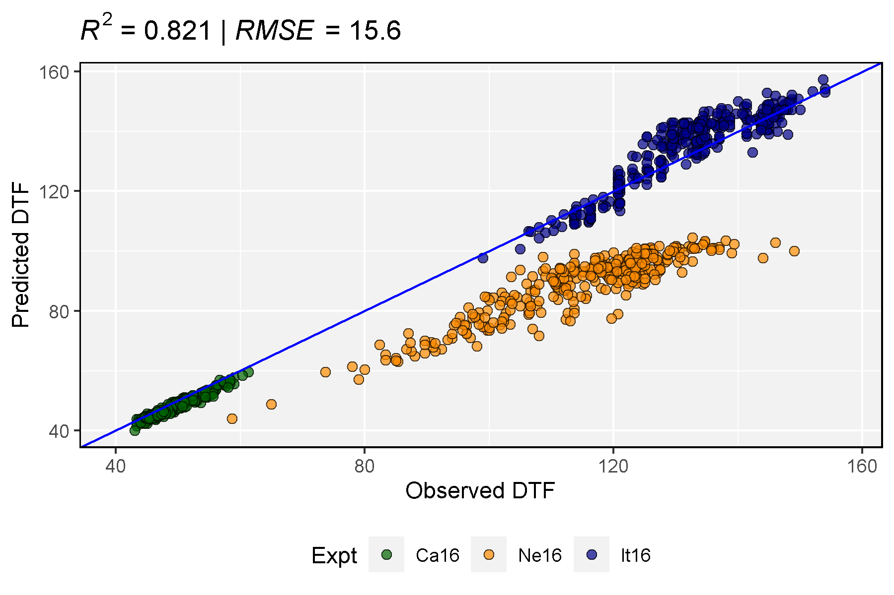
Next we will evaluate a Photothermal Model which describes the reciprical of DTF (RDTF) as a linear function of temperature and photoperiod:
\(\frac{1}{f}=a+b\overline{T}+c\overline{P}\)
where:
DTF)T_mean)P_mean)# Perform linear regression
myModel <- lm(RDTF ~ T_mean + P_mean, data = d1)
summary(myModel)##
## Call:
## lm(formula = RDTF ~ T_mean + P_mean, data = d1)
##
## Residuals:
## Min 1Q Median 3Q Max
## -0.0038951 -0.0005957 -0.0001821 0.0004946 0.0086038
##
## Coefficients:
## Estimate Std. Error t value Pr(>|t|)
## (Intercept) -1.843e-02 1.894e-03 -9.730 1.54e-12 ***
## T_mean 7.888e-04 8.688e-05 9.079 1.20e-11 ***
## P_mean 1.761e-03 1.223e-04 14.395 < 2e-16 ***
## ---
## Signif. codes: 0 '***' 0.001 '**' 0.01 '*' 0.05 '.' 0.1 ' ' 1
##
## Residual standard error: 0.002006 on 44 degrees of freedom
## Multiple R-squared: 0.8893, Adjusted R-squared: 0.8843
## F-statistic: 176.8 on 2 and 44 DF, p-value: < 2.2e-16In this case we now have multiple independant varables and cannot correlate RDTF with T_mean + P_mean using Pearson’s formula. Instead we will correlate RDTF with the Predicted_RDTF values that come from the model.
# Get predicted values and residual values from model
d1 <- d1 %>% mutate(Predicted_RDTF = predict(myModel),
Predicted_DTF = 1 / predict(myModel),
Residuals_RDTF = residuals(myModel),
Residuals_DTF = abs( (1/DTF) - (1/Predicted_DTF) ))Calculate R2
# Calculate R^2 using cor function
cor(d1$RDTF, d1$Predicted_RDTF)^2## [1] 0.8893289# Calculate R^2 using Pearson's formula
pearsonsR2(x = d1$RDTF, y = d1$Predicted_RDTF)## [1] 0.8893289# Calculate R^2 using SS formula
SumOfSquaresR2(o = d1$RDTF, p = d1$Predicted_RDTF)## [1] 0.8893289Each formula gives the same R2 result.
mp <- ggplot(d1, aes(x = Predicted_RDTF, y = RDTF)) +
geom_smooth(method = "lm", se = F, size = 2, color = "red") +
geom_abline(color = "blue") +
geom_segment(aes(yend = Predicted_RDTF, xend = Predicted_RDTF)) +
geom_point(aes(fill = MacroEnv, size = abs(Residuals_RDTF)), pch = 21, alpha = 0.7) +
scale_fill_manual(values = c("darkgreen","darkorange","darkblue")) +
theme_dblogr(legend.position = "none") +
labs(title = substitute(paste(italic("R")^2, " = ", r2),
list(r2 = round(SumOfSquaresR2(o = d1$DTF, p = d1$Predicted_DTF), 3))),
caption = "\xa9 www.dblogr.com/ | Data: AGILE")
ggsave("corr_coef_11.png", mp, width = 6, height = 4)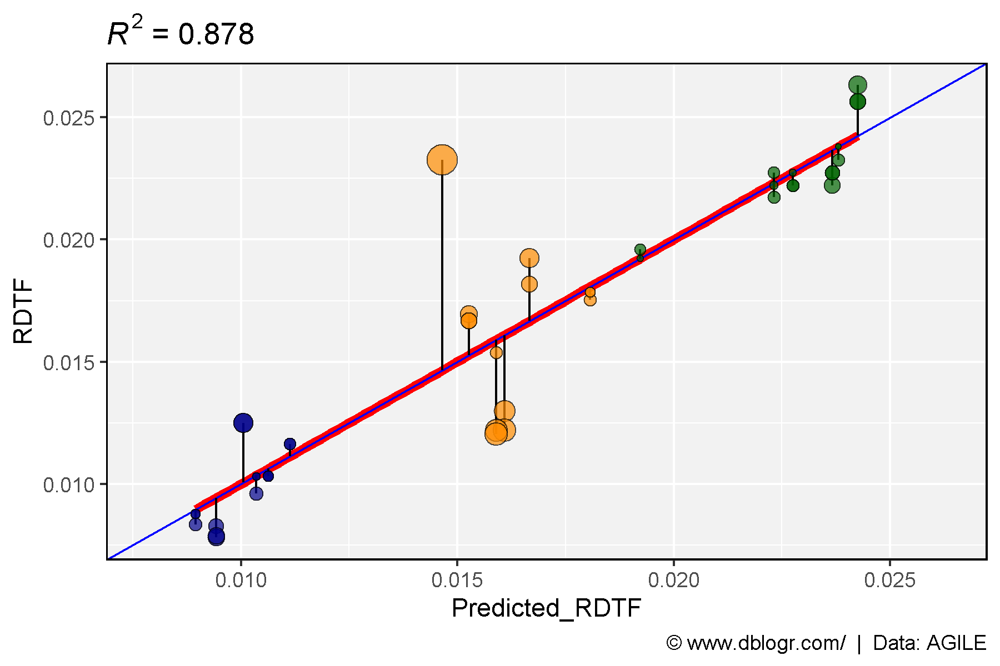
However, we are interested in DTF and not RDTF. Let see how R2 changes when we calculate it for DTF instead of RDTF.
# Calculate R^2 using cor function
cor(x = d1$DTF, y = d1$Predicted_DTF)^2## [1] 0.8823158# Calculate R^2 using Pearson's formula
pearsonsR2(x = d1$DTF, y = d1$Predicted_DTF)## [1] 0.8823158# Calculate R^2 using SS formula
SumOfSquaresR2(o = d1$DTF, p = d1$Predicted_DTF)## [1] 0.8775759Notice the how the values of R2 from cor or pearssonR2 and SumOfSquaresR2 do not match. Why is this occuring?
mp <- ggplot(d1, aes(y = DTF, x = Predicted_DTF)) +
geom_smooth(method = "lm", se = F, size = 2, color = "red") +
geom_abline(color = "blue") +
geom_segment(aes(yend = Predicted_DTF, xend = Predicted_DTF)) +
geom_point(aes(fill = Expt, size = abs(Residuals_DTF)), pch = 21, alpha = 0.7) +
theme_dblogr(legend.position = "none") +
labs(title = substitute(paste(italic("R")^2, " = ", r2),
list(r2 = round(SumOfSquaresR2(o = d1$DTF, p = d1$Predicted_DTF), 3))),
caption = "\xa9 www.dblogr.com/ | Data: AGILE")
ggsave("corr_coef_12.png", mp, width = 6, height = 4)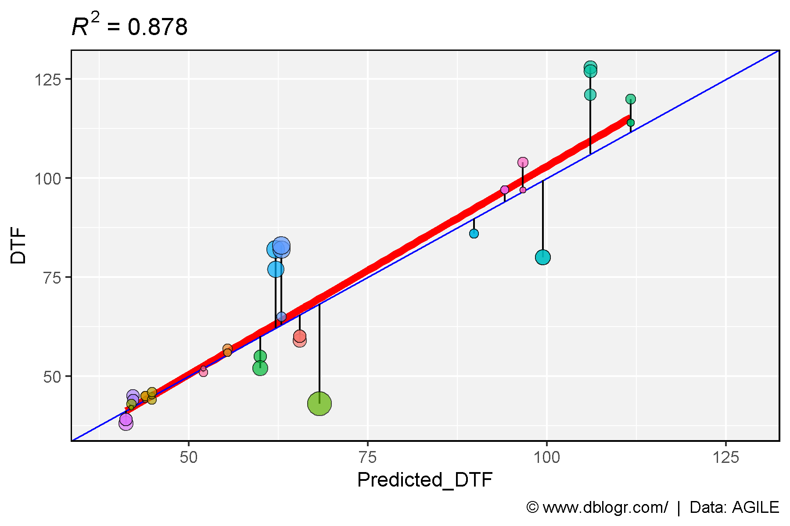
Now that we’ve transformed the data, the geom_abline and geom_smooth lines no longer perfectly overlap, which causes the slight difference in R2.
However, this still leaves open the questions of why geom_abline() and geom_smooth no longer overlap after transforming the data? Lets try and visualize this with test data.
# Prep data
xx <- data.frame(x = 1:10, y = 1:10 + 0.5) %>%
mutate(Residuals = abs(y-x))
SSt <- sum((xx$x - mean(xx$x))^2)
SSr <- sum((xx$x - xx$y)^2)
r2 <- round(1 - SSr / SSt, 4)
# Plot
mp1 <- ggplot(xx, aes(x = x, y = y)) +
geom_abline() +
geom_segment(aes(xend = x, yend = x)) +
geom_point(aes(size = Residuals), alpha = 0.7) +
theme_dblogr() +
labs(title = substitute(paste(italic("R")^2, " = 1 - (", SSr, "/",SSt, ") = ", r2 ),
list(SSr = SSr, SSt = SSt, r2 = r2)))
# Prep data
xx <- xx %>% mutate(Residuals = abs((1/y)-(1/x)))
SSt <- sum((1 / xx$x - mean(1 / xx$x))^2)
SSr <- sum((1 / xx$x - 1 / xx$y)^2)
r2 <- round(1 - SSr / SSt, 4)
# Plot
mp2 <- ggplot(xx, aes(x = 1 / x, y = 1 / y)) +
geom_abline() +
geom_segment(aes(xend = 1 / x, yend = 1 / x)) +
geom_point(aes(size = Residuals), alpha = 0.7) +
theme_dblogr() +
labs(title = substitute(paste(italic("R")^2, " = 1 - (", SSr, "/",SSt, ") = ", r2 ),
list(SSr = round(SSr, 3), SSt = round(SSt, 3), r2 = r2)),
caption = "\xa9 www.dblogr.com/ | Data: AGILE")
# Append Plots
mp <- ggarrange(mp1, mp2, ncol = 2, legend = "none", align = "h")
ggsave("corr_coef_13.png", mp, width = 8, height = 4)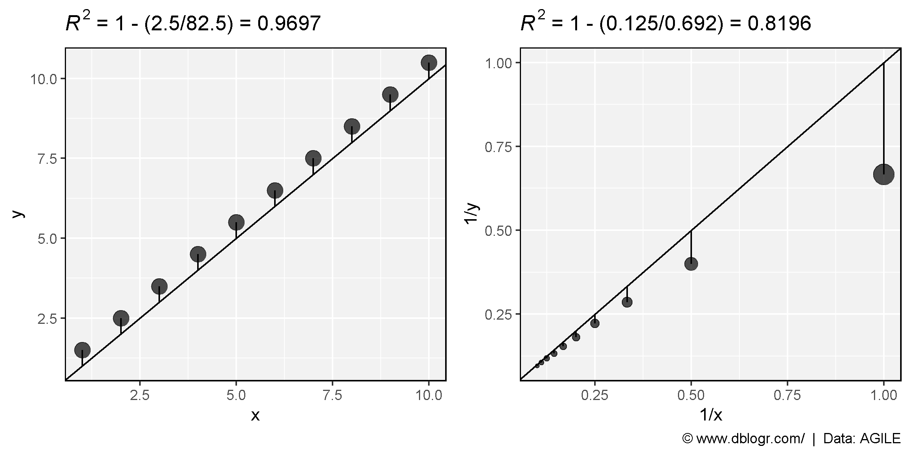
Visualizing the Photothermal model
x <- d1$T_mean
y <- d1$P_mean
z <- d1$RDTF
cv <- as.numeric(as.factor(d1$MacroEnv))
fit <- lm(z ~ x + y)
# Create PhotoThermal plane
fitpoints <- predict(fit)
grid.lines = 12
x.pred <- seq(min(x), max(x), length.out = grid.lines)
y.pred <- seq(min(y), max(y), length.out = grid.lines)
xy <- expand.grid(x = x.pred, y = y.pred)
z.pred <- matrix(predict(fit, newdata = xy),
nrow = grid.lines, ncol = grid.lines)
# Plot with regression plane
png("corr_coef_14.png", width = 1000, height = 1000, res = 200)
par(mar=c(1.5, 2.5, 1.5, 0.5))
plot3D::scatter3D(x, y, z, pch = 18, cex = 2, zlim = c(0.005,0.03),
col = alpha(c("darkgreen","darkorange","darkblue"),0.5),
colvar = cv, colkey = F, col.grid = "grey", bty = "u",
theta = 40, phi = 25, ticktype = "detailed", cex.lab = 1, cex.axis = 0.5,
xlab = "Temperature", ylab = "Photoperiod", zlab = "1 / DTF",
surf = list(x = x.pred, y = y.pred, z = z.pred, col = "black",
facets = NA, fit = fitpoints), main = "PhotoThermal Model")
dev.off()## [1] TRUE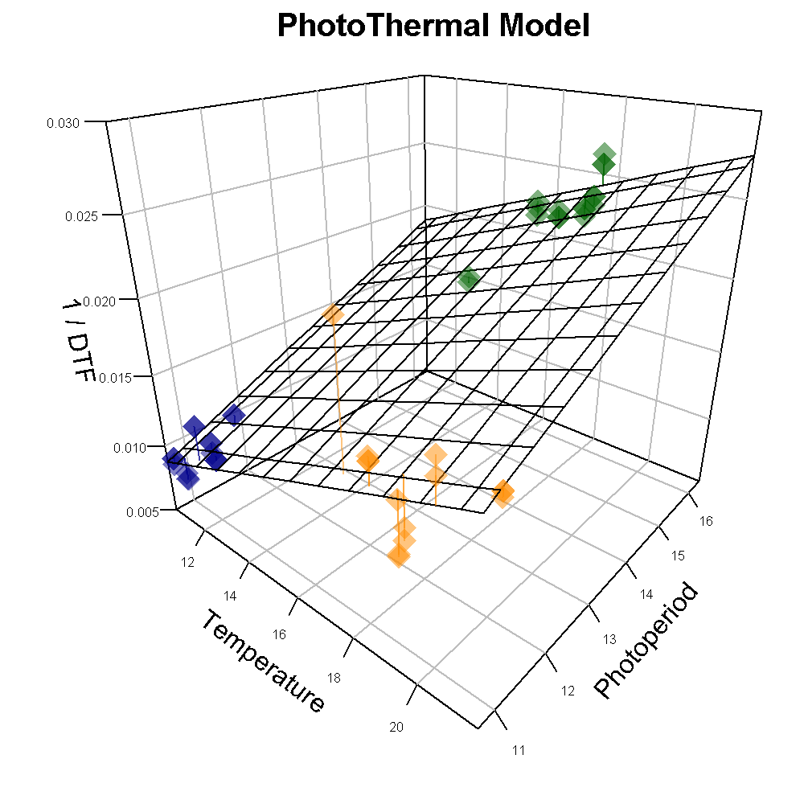